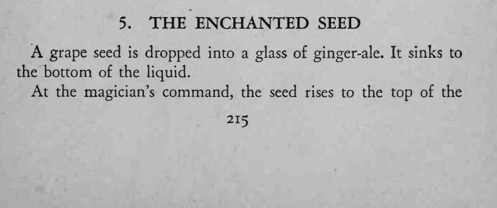
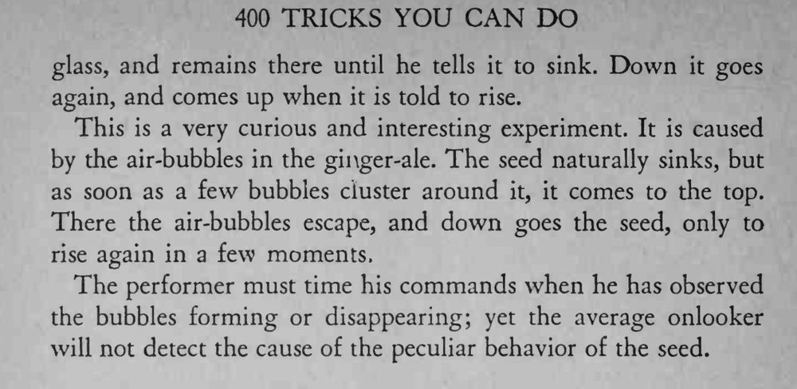

葡萄籽丢进姜汁汽水便沉到杯底；魔术师一声令下，籽自己升上水面，命令它下沉又沉下去，反复听令升降。
全靠观察气泡聚散来掐准发令时机，观众看不出真正原因。


grape seed is dropped into a glass of ginger-ale. It sinks to the bottom of the liquid. At the magician's command, the seed rises to the top of the glass, and remains there until he tells it to sink. Down it goes again, and comes up when it is told to rise. This is a very curious and interesting experiment. It is caused by the air-bubbles in the ginger-ale. The seed naturally sinks, but as soon as a few bubbles cluster around it, it comes to the top. There the air-bubbles escape, and down goes the seed, only to rise again in a few moments. The performer must time his commands when he has observed the bubbles forming or disappearing; yet the average onlooker will not detect the cause of the peculiar behavior of the seed.